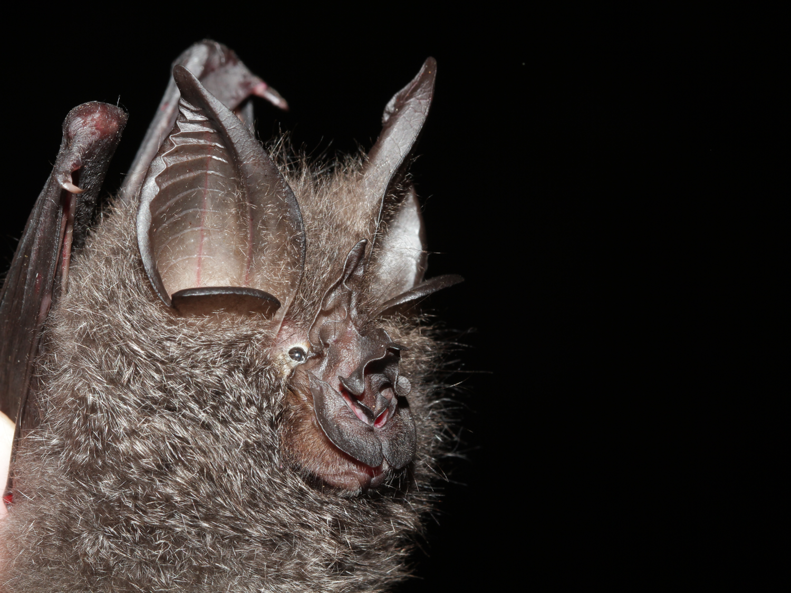

|  |
Understanding how biotic and abiotic factors influence species composition and structure of ecological communities is essential for biodiversity conservation under the changing environment. Climate variability can affect trait diversity and ecological functions of a community through community assembly. |
|---|